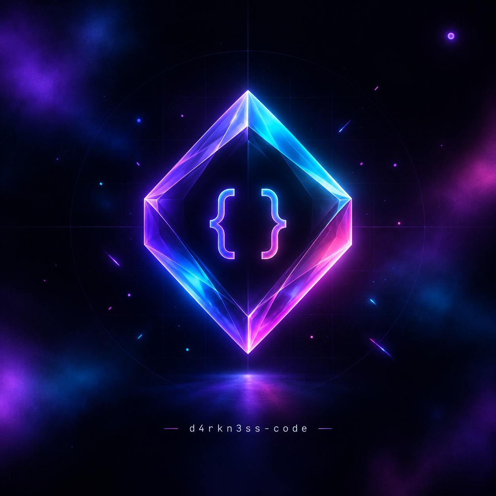

Performance
Lighthouse 100/100 — ленивая загрузка, минимум перерисовок, GPU-ускоренные анимации.

Frontend · Full-Stack · UI/UX
Собираю премиальные веб-интерфейсы: молниеносные, адаптивные, с анимациями уровня Linear и Stripe. Без заглушек — только рабочий код.
Lighthouse 100/100 — ленивая загрузка, минимум перерисовок, GPU-ускоренные анимации.
Микроанимации, доступность (a11y), 8-пиксельная сетка, продуманная типографика.
SOLID, DRY, KISS. Чистая архитектура, строгая типизация, самодокументируемый код.